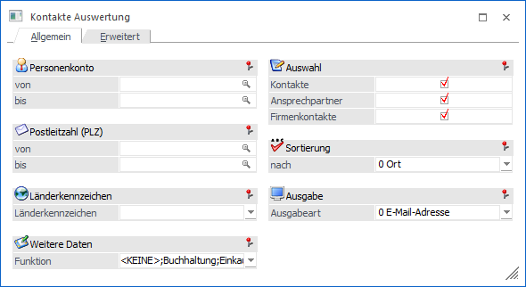
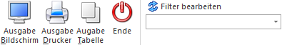

Mit Hilfe der Auswertung
1 CRM
1 Kontakte Auswertung
können Listen der Kontakte bzw. Ansprechpartner ausgegeben werden. Hierbei ist es möglich nach verschiedensten Kriterien zu selektieren und zu definieren, welche Daten ausgegeben werden sollen.

Das Fenster ist in die folgenden Bereiche unterteilt, welche in den nachfolgenden Kapiteln detailliert beschrieben werden:
ü Register "Allgemein"
In dem
Register "Allgemein" kann die Kontakte Auswertung auf Grundlage von
vordefinierten Selektionsmöglichkeiten vorgenommen werden.
ü Register "Erweitert"
In diesem
Register kann auf Grundlage einer zuvor angelegten Suchstrategie eine Auswertung
der Kontakte bzw. Ansprechpartner erfolgen.
Hinweis
Die unterschiedlichen Suchstrategien werden in dem Programm "Vorlagen Anlage" (WinLine START - Vorlagen - Vorlagen Anlage - Stammdaten Kontakte - Vorlage als "Suchstrategie") definiert.
Buttons

Ø Ausgabe Bildschirm
Durch Drücken des Buttons "Ausgabe Bildschirm" bzw. der Taste F5 erfolgt die Ausgabe der Auswertung am Bildschirm.
Ø Ausgabe Drucker
Durch Drücken des Buttons "Ausgabe Drucker" Buttons erfolgt die Ausgabe der Auswertung am Drucker.
Ø Ausgabe Tabelle
Durch Drücken des Buttons "Ausgabe Tabelle" wird die Auswertung in Form einer WinLine Tabelle dargestellt
Ø Ende
Durch Drücken des Buttons "Ende" bzw. der ESC-Taste wird das Fenster geschlossen
Ø Filter bearbeiten
Durch Anklicken des Buttons "Filter bearbeiten" kann die Kontakte Auswertung nach frei definierbaren Kriterien eingeschränkt werden.